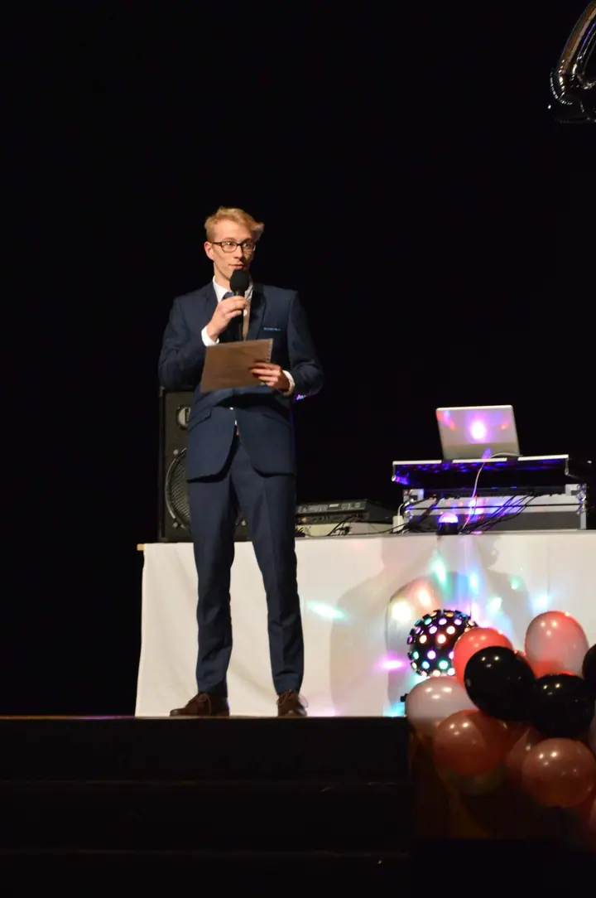
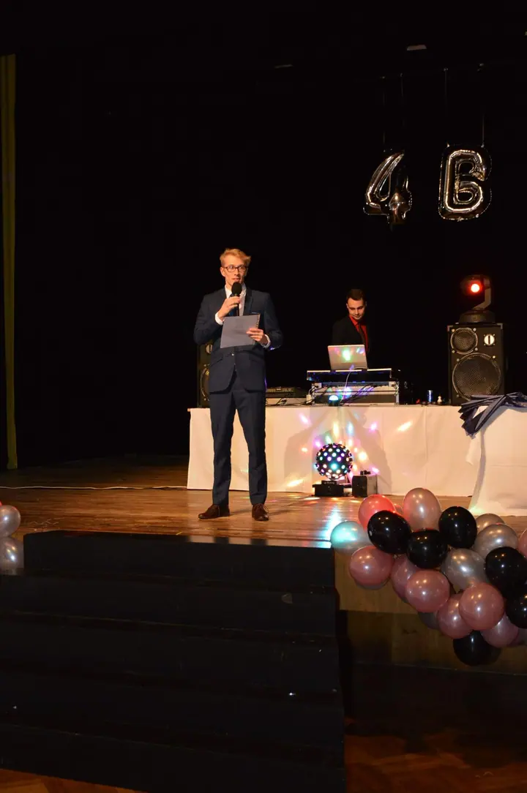
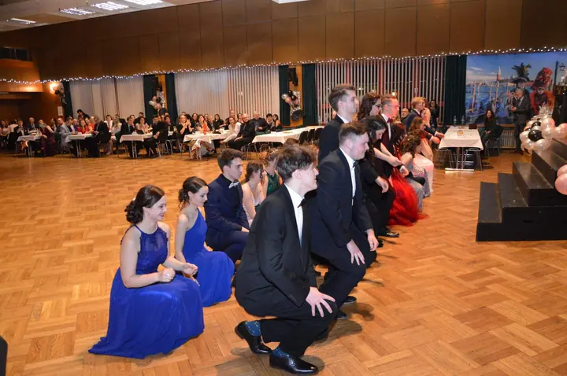
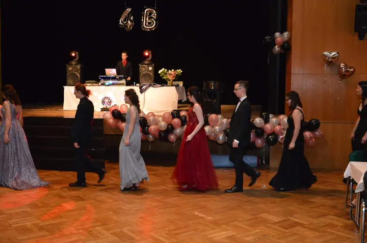

01 / 04
Plesy a společenské akce
Fotím události z okolí Opavy, od maturitních plesů až po místní slavnosti. Zachytím celý večer: moderátora na pódiu, slavnostní nástup i první tanec.
Zeptat se na termín→



Plesy a události z okolí Opavy
Zeptat se na termín →(01) Ahoj
Jmenuji se Václav Kavan a fotím události z okolí Opavy. Chodím na plesy, svatby i zápasy místního fotbalu. Z každé akce pak vzniká galerie, kterou si můžete projít a sdílet s ostatními.
(02) Co fotím
01 / 04
Fotím události z okolí Opavy, od maturitních plesů až po místní slavnosti. Zachytím celý večer: moderátora na pódiu, slavnostní nástup i první tanec.
Zeptat se na termín→Dále nabízím
Svatbu fotím reportážně od obřadu po oslavu. V mém portfoliu najdete svatební alba z let 2017 až 2024, mezi nimi i focení na zámku v Kravařích.
↗Klidné focení ve dvou, venku nebo na místě, které máte rádi. Bez spěchu a bez strojeného pózování.
↗Fotím zápasy a akce místních klubů a spolků, například pro FC TJ Sokol Zlatníky. Fotky pak najdete v samostatné galerii na Rajčeti.
↗(04) Postup
Od první zprávy po hotovou galerii.
Krok 1 z 4
Ozvěte se přes kontaktní formulář nebo e-mailem a napište, jakou akci chystáte, kdy a kde.
Krok 2 z 4
Probereme program, důležité momenty a co od fotek čekáte, ať vím, kde mám v danou chvíli stát.
Krok 3 z 4
Na místě fotím reportážně a nenápadně. Zachytím nástupy, projevy, tanec i lidi kolem.
Krok 4 z 4
Vybrané fotky upravím a nahraji do galerie na Rajčeti nebo Zoneramě, odkud si je snadno prohlédnete a stáhnete.
Ples se odtančí za jeden večer, fotky zůstanou.
(05) Za objektivem
Fotím pod značkou Foto V.K. hlavně na Opavsku, ale vyrazím i do Hlučína, Krnova nebo Ostravy. Nejvíc mě baví reportáž a dokument. Mám rád atmosféru plesů, koncertů a divadla, svatby a sport, kde se věci dějí samy a já je jen pozorně sleduji.
Fotografie je pro mě hlavně radost. Fotím na Nikon a s bleskem Nissin, takže si poradím i v tmavém sále s barevnými světly. Na Rajčeti mám přes jedenáct tisíc fotek a vedu také galerie pro FC TJ Sokol Zlatníky a Kapli svaté Anny.
Záleží mi na tom, aby se lidé na mých fotkách cítili dobře. Pokud nesouhlasíte se zveřejněním fotky, na které jste, stačí mi napsat a fotku odstraním nebo vás na ní zakryju.
Václav
Václav Kavan · Fotograf událostí z okolí Opavy
Fotky zveřejňuji v galeriích na Rajčeti a Zoneramě. Odkazy najdete v mém Linktree.
Napište mi a fotku, na které jste, odstraním nebo vás na ní zakryju.
Ano. Nejčastěji fotím na Opavsku, ale přijedu i do Hlučína, Krnova nebo Ostravy.
Ano. Fotím svatby, párová focení i zápasy a akce místních klubů a spolků.
(07) Kontakt
Napište pár vět o tom, co si představujete, a termín, který se vám hodí.
vasekkavan@gmail.com